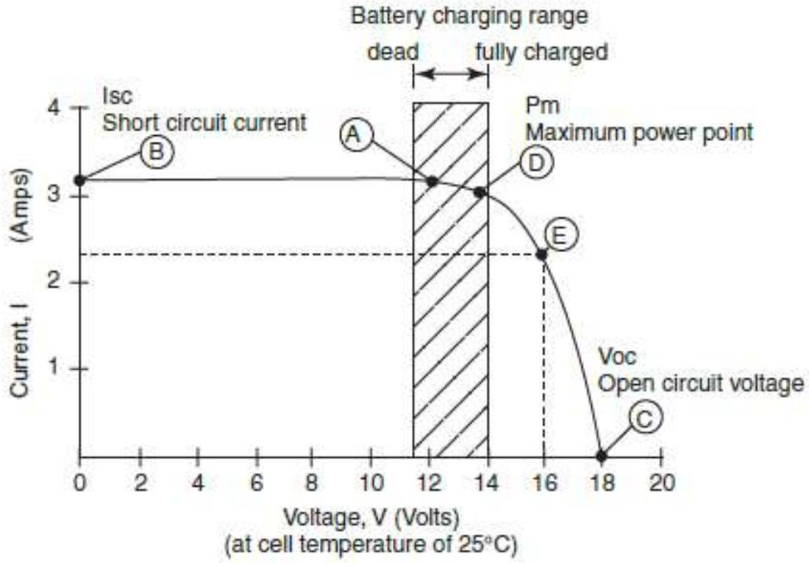

PV Module Characteristics (I-V Curve, Sizing, Connections)
THE I-V CURVE
I-V curves are used to compare solar cell modules and to predict their performance at various temperatures, voltage loads and levels of insolation. Each solar cell and module has its own particular set of operating characteristics. At a given voltage, a module (or cell) will produce a certain current. These properties are described by the current-voltage curve, better known as the I-V curve.
Figure shows an I-V curve for a module rated at 42 Wp at STC. The left-hand side (I) gives the current the module produces depending on voltage. The bottom side gives the voltage produced by the module at various currents. At each point along the line, you can determine the power of the module by multiplying the current by the voltage. For example, imagine a battery being charged by a module: at 12 volts (Point A, Figure 3.4), the current from the module is 3.2 amps and the power output is 38.4 watts (amps $\times$ volts $=$ power, so $12 \mathrm{~V} \times 3.2 \mathrm{~A}=38.4 \mathrm{~W}$, which is less than the rated 42 Wp ).
There are several points of interest about the I-V curve in Figure
There are several points of interest about the I-V curve in Figure 3.4:
- Isc, the short-circuit current, is the current measured in full sunlight when the positive and negative wires are 'shorted'. In practice, a suitably rated ammeter is attached to the positive and negative leads of the module. On the I-V curve, this is the point where the curve crosses 0 volts (Point B). This is the maximum current that the module is capable of producing.
- Voc, the open circuit voltage, is the voltage measured with an open circuit. It is measured with the module in full sunlight using a voltmeter attached to the positive and negative leads of the module. On the I-V curve, this is the point where the curve crosses 0 amps (Point C ). This is the maximum voltage that the module can produce on a sunny day.
- Pm, the maximum power point, is the point on the I-V curve where the module produces the greatest power (its rated maximum, which in this example is 42 Wp ). The maximum power point is always found at the place where the curve begins to bend steeply downward ('the knee', Point D). It is advisable to operate a module as near to the maximum power point as possible. If, for example, the module in Figure 3.4 is operating a load that demands 16 volts (Point E), power output (at 36 watts) is much less than that at the maximum power at Point D.
In general, the closer the 'knee' of the I-V curve is to the shape of a square, the better output characteristics of the module. Crystalline modules have I-V curves that are more 'square' than thin film modules.
SIZE (OUTPUT POWER)
As mentioned previously, the output power of a PV module is indicated as Wp (watt peak). However, Wp of a PV module depends on intensity of sunlight and temperature. Therefore, standard measurements of output power are tested at the condition of $1,000 \mathrm{~W} / \mathrm{m} 2, 25^{\circ} \mathrm{C}$, AM1.5.
Since the actual operating conditions vary, it is necessary to consider several factors that affect output efficiency of a PV module. Factors that affect output power are;
- Intensity of solar radiation Low solar radiation reduce output power
- Temperature of module High temperature reduce output power Surface temperature of a PV module may go up 50 to $60^{\circ} \mathrm{C}$.
- Degradation and dust of module Dust on surface of PV module reduces the intensity of solar radiation reaching the solar cell surface. Degradation is high for amorphous type modules.
- Effectiveness of maximum power point Battery charging voltage is different from maximum power point.
Available output power is estimated as,
K is total loss factor mentioned above.
This handout uses 0.8 for crystalline PV modules and 0.6 for amorphous PV modules.
Example for calculating module output
Use the calculation below to predict your module's output on a typical day:
Operating current at load (amps) $\times$ peak sun hours $($ PSH $) = $ Expected output of module $($ amp-hours $/$ Ah $)$
When charging a battery at 12.6 V , the current output of a module is about 3.1 A . If the site receives 5 peak sun hours, then the module output is: $3.1 \mathrm{~A} \times 5 \mathrm{psh}=15.5 \mathrm{Ah}$
This figure can be multiplied by 12 V to get watt-hours (Wh): $15.5 \mathrm{Ah} \times 12 \mathrm{~V}=186 \mathrm{Wh}$
PEAK HOURS
Available power per day is based on how many hours of sunlight are obtained. Intensity of sunlight during a day is shown below. Total area under this curve is total sunlight. To average this area for calculation, some lower part is moved to upper part and peak part is moved to lower part. This averaged area (hatched area) is same as original area. This averaged hour is called peak hours. To calculate power per day, Wp is multiplied by peak hours.
The value of peak hours depends on areas and should be obtained by actual measurement. As peak hours change daily, there is minimum peak hours, average peak hours and maximum peak hours in a year. Minimum peak hours is normally used to ensure load demand. However, load demand varies and if minimum peak hours is used, the system sizing becomes bigger and costs more.
Example. 1.
How much ampere-hour is generated per day with 55 Wp PV module in the area where 5 hours of peak hours is obtained? Wp actual $=\mathrm{K} \times 55 \mathrm{Wp}=0.8 \times 55 \mathrm{Wp}=44 \mathrm{Wp}$
$\mathrm{Wh}=\mathrm{Wp}$ actual $\times$ Peak hours $=44 \mathrm{Wp} \times 5.0 \mathrm{~h}=220 \mathrm{Wh}$
$\mathrm{Ah}=\mathrm{Wh} / 12 \mathrm{~V}=220 \mathrm{Wh} / 12 \mathrm{~V}=18.3 \mathrm{Ah}$
The answer is 18.3 Ah per day.
TILT ANGLE
To obtain maximum sunlight, a PV module has to face to the sun. Ideally, PV module should track the sun. However, tracking system is expensive and not economical for SHS. Therefore, a PV module is fixed at an optimum tilt angle. Solar radiation changes daily and monthly so that using tilt angle targeted to worst month would be a better solution. However, this method requires actual record of solar radiation throughout the year and worst month of solar radiation is not always a heavy load month.
tilt angle is the latitude plus $5^{\circ}$ to $10^{\circ}$ and round it to $5^{\circ}$ step.
Example.
Show orientation and recommended tilt angle at Harare. Latitude of Harare is $18^{\circ} \mathrm{S}$.
$18^{\circ}+5^{\circ}=23^{\circ}$ then rounded to $25^{\circ}, 18^{\circ}+10^{\circ}=28^{\circ}$ then rounded to $30^{\circ}$
Orientation is North.
Tilt angle is $25^{\circ}$ or $30^{\circ}$.
MEASUREMENT OF ACTUAL POWER
It is recommended to measure the actual output of a PV module before you purchase it. Vmp and Imp are necessary to obtain output power. This requires the measurement of I-V curve of the PV module. However, an easy alternative is to measure Voc and Isc and estimate Vmp and Imp.
MEASUREMENT OF VOC AND ISC
Place a PV module under the sun for at least 30 minutes to stabilize surface temperature on a sunny day between 11 a.m. and 1 p.m.. Then measure Voc measured and Isc measured. Isc measured changes depending on orientation and tilt angle of a PV module. Make sure the PV module is faced to the sun and obtain maximum Isc by adjusting orientation and tilt angle.
Estimation of Vmp
The difference between Voc and Vmp is almost same as catalog value and measured value. Therefore, Vmp measured is estimated from Voc measured.
Estimation of Imp
The Ratio between Isc and Imp is almost same as catalog value and measured value. Therefore, Imp measured is obtained from Isc measured.
CONNECTIONS TO OTHER PV MODULES
To obtain more power, PV module can be connected in an array. Both parallel and series connection are possible. All modules should be of the same model. It is not recommended to mix modules of different types and sizes.
PARALLEL CONNECTION
- Total voltage is the average of the PV module voltages.
- Total current is the sum of the PV module current.
- Blocking diode is necessary to prevent reverse current in case of a module is shadowed.
- Blocking diode reduce output voltage to approximately 0.3 to 0.6 V depends on diodes.
- This voltage drop reduces efficiency to approximately 0.97 .
A. Parallel Connection
SERIES CONNECTION
Series connection
- Total voltage is the sum of the PV module voltages.
- Total current is limited by the smallest PV module current.
- Bypass diode is necessary to avoid low performance in case a module is shadowed or break down.
- Efficiency is approximately 0.95
SPECIFICATIONS
Type
Use the monocrystalline or polycrystalline types of modules. The amorphous type is not recommended unless used for smaller application ( 20 W or less) such as solar lantern.
Number of cells
A minimum of 36 cells is required. A PV module with 34 or less cells may not be enough to charge battery at high temperatures (tropical condition).
Parameters
Check if manufacturer has adequate production testing facilities to monitor quality of daily production of modules. If manufacture does not have such facilities, do not buy from them.
- Pm Output power at maximum power point ($1000 \mathrm{~W} / \mathrm{m} 2, 25^{\circ} \mathrm{C}$, AM1.5)
- Imp Current at maximum power point
- Vmp Voltage at maximum power point
- Isc Current at short circuit
- Voc Voltage at open circuit